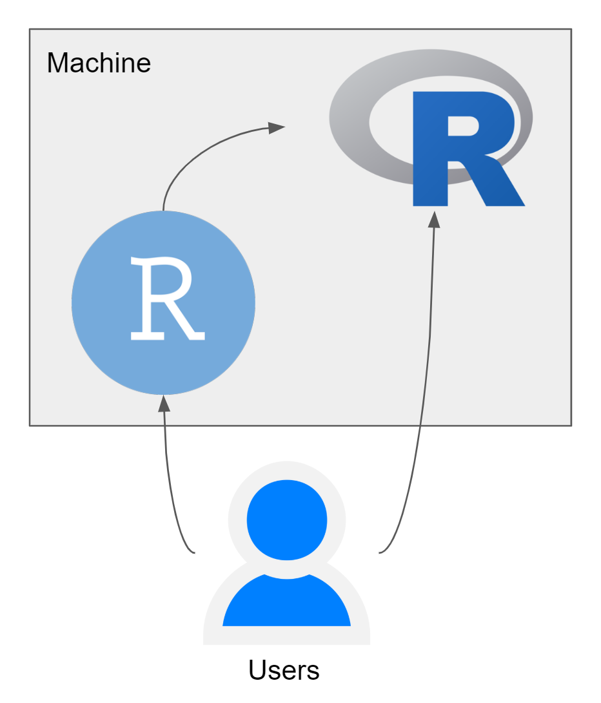

Kenalin nama saya Hardy . Ini post pertama saya semenjak pertama kali bikin blog mengenai tech and data analytic. Perkenalan dikit ya, aku tinggal di Jakarta tepatnya di Jakarta Selatan dari tahun 2014. Saat ini kerja di Tech Startup yang ijo ijo gitu hahhaha. Kerja di bagian location technology development, bidang yang mirip mirp sama yang dipelajarin waktu kuliah.
Passion dibidang location data analytic sama financial analytic, berat banget daah. Blog ini bakal dikit banyak bahas mengenai 2 hal diatas kedepan dimana bahasa pemrograman yang digunakan adalah R dan Python dengan bahasa yang lebih kasual karena blog yang bahas teknikal hal diatas udah banyak banget apalagi dalam bahasa Inggris, harapannya bisa lebih menjangkau anak muda yang pensaran seperti apa sih mengolah data dengan menggunakan 2 bahasa diatas. Tapi untuk pertama mungkin bakal lebih banyak pakai R dulu untuk penjelasan
Sebelum cerita macem macem, sepertinya saya perlu sedikit cerita mengenai si R ini. Kedepannya dalam blog tech and engineering ini, terdapat 2 tools yang digunakan untuk melakukan analysis, yaitu R dan RStudio.
R merupakan bahasa pemrograman di mana seperangkat instruksi akan diterjemahkan ke dalam bahasa komputer, sedangkan RStudio merupakan aplikasi tambahan yang dapat membantu pengguna R melakukan pekerjaannya.
